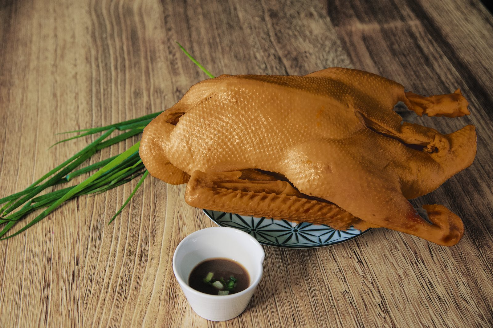
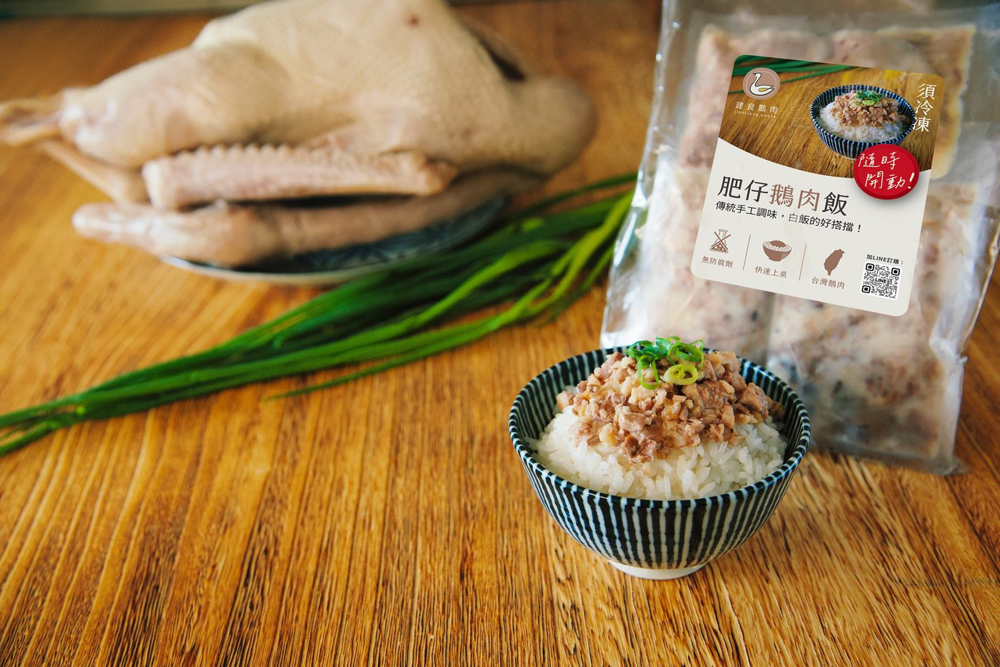
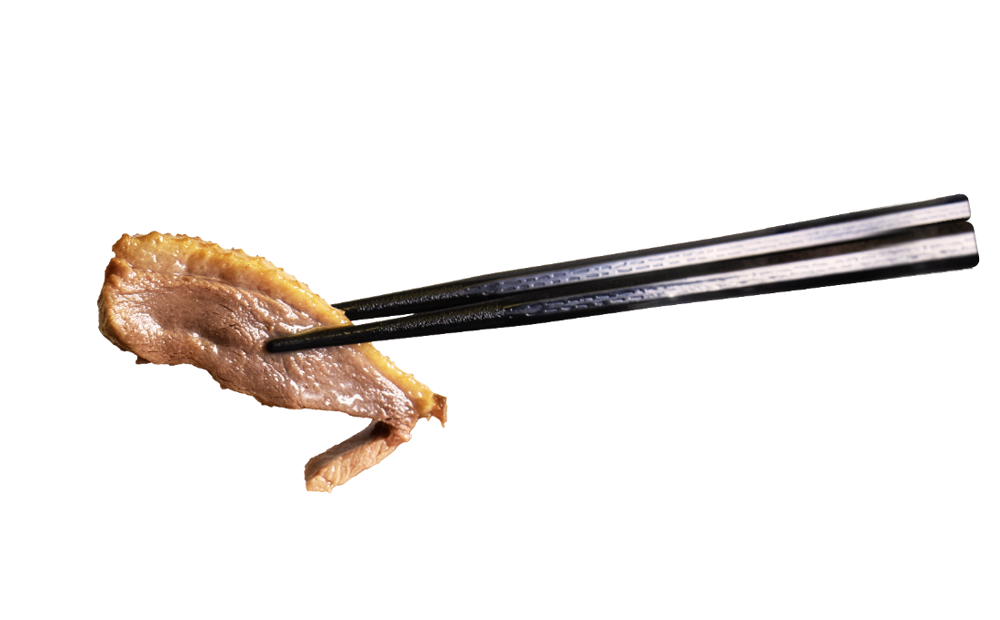
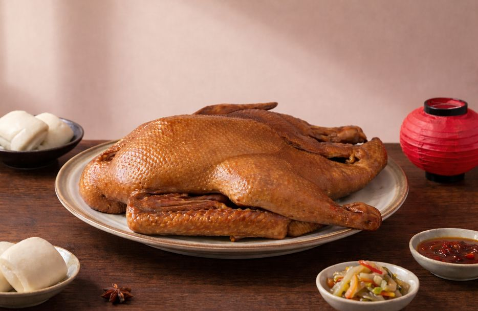

把家的味道，繼續傳下去
建良鵝肉，在新竹走過四十年的歲月。

第一代，是我的公公婆婆。
他們從一間小店開始，用自己的雙手，一點一滴累積出建良的味道，也養大了一個家。
到了我們第二代，接下的不只是一間店，
更是爸媽大半輩子的心血與客人四十年來的信任。

現在，我們想讓建良走得更遠一點。
把熟悉的茶香鵝肉、肉燥與滷味，從店裡帶到網路上，讓更多人即使不在新竹，也能在家裡吃到這份傳承兩代的味道。
第一代，創造了建良的味道。
第二代，把這份味道繼續傳下去。

我們堅持使用嚴選茶葉與果木慢燻，火候講究、時間漫長。每一片鵝肉皮薄、肉嫩、油亮，咀嚼間帶著淡雅茶香與煙燻的層次。
從清晨開始備料，到掛鵝、燻製、放涼、切片——每一個步驟都不能急。我們相信，時間才是真正的調味料。

四十年來與牧場合作的默契，讓我們挑得到肉質飽滿、油脂均勻的好鵝。每一批進貨我們都親自檢視，不合格的，絕不上桌。
我們希望您嚐到的每一口，都是真正的好食材，不需要過多的調味來掩蓋。
歡迎到我們新竹的店面，現場品嚐熱騰騰的茶香鵝肉。